Institutions, banques, industriels, transporteurs, écoles. Au Togo comme au Bénin, nous équipons des organisations dont l’activité ne peut pas s’arrêter.
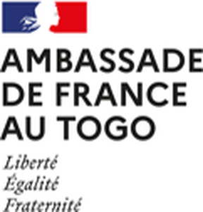
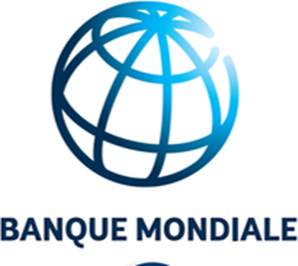
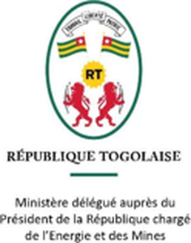
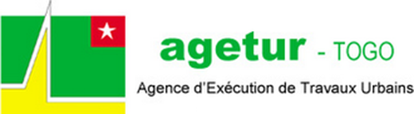
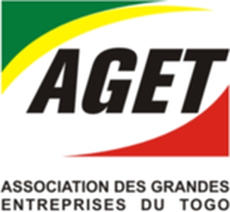
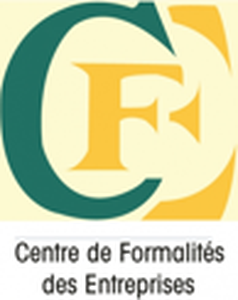
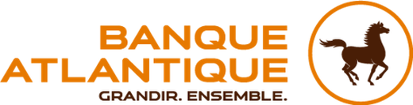
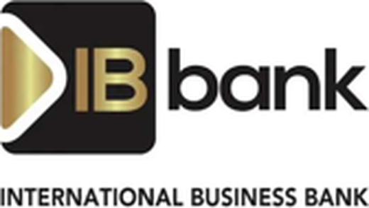
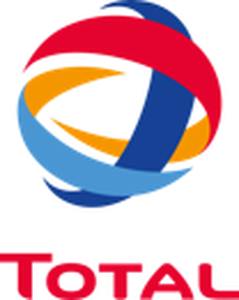
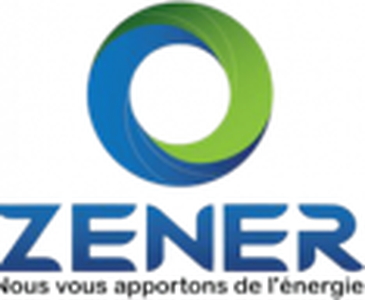
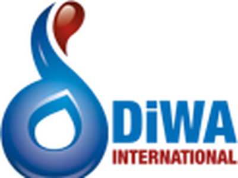
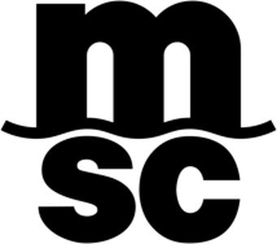
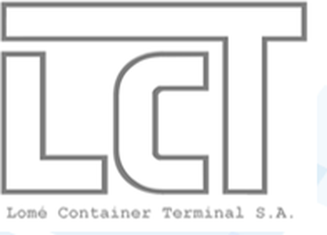
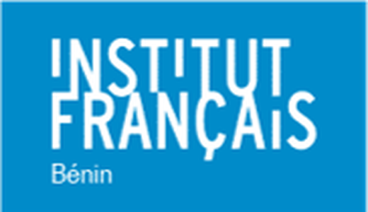
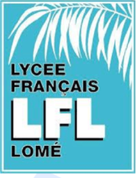
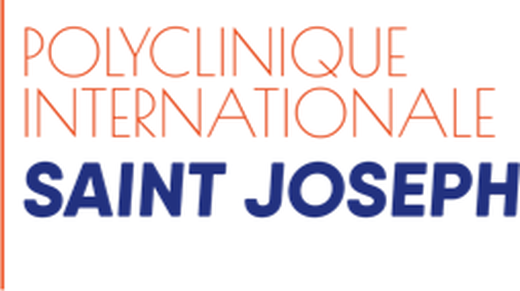
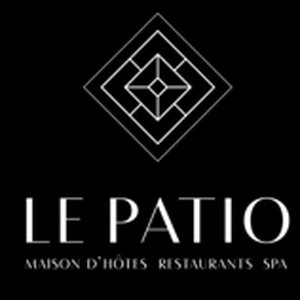
Administrations, agences publiques et organisations internationales, avec les exigences de fiabilité et de confidentialité qui vont avec.
6 organisationsReprésentation diplomatique équipée en postes de travail et accompagnée sur ses équipements de sécurité.
Fourniture et installation de matériel informatique professionnel pour les équipes projet.
République Togolaise. Équipement des services et accompagnement sur l’infrastructure informatique.
Agence d’Exécution de Travaux Urbains. Parc informatique, réseau et solutions de sauvegarde.
Association des Grandes Entreprises du Togo. Équipement bureautique et maintenance du parc.
Postes de travail et infrastructure pour l’accueil et le traitement des dossiers.
Des environnements où la disponibilité du poste de travail et la sécurité des données ne se négocient pas.
2 organisationsMatériel informatique, sécurisation des postes et continuité de service.
International Business Bank. Équipement des agences et accompagnement technique.
Des sites opérationnels, souvent multiples, où le réseau et le matériel doivent tenir dans la durée.
3 organisationsFourniture d’équipements informatiques et maintenance sur sites opérationnels.
Solutions d’énergie. Équipement informatique et infrastructure réseau.
Groupe de négoce. Postes de travail, réseau et maintenance.
Des activités en flux continu, où l’arrêt d’un poste ou d’une caméra a un coût immédiat.
2 organisationsOpérateur maritime international. Postes de travail, réseau et vidéosurveillance.
Terminal à conteneurs. Équipement informatique et accompagnement technique.
Des établissements recevant du public, avec des salles équipées et une couverture réseau à tenir.
4 organisationsÉtablissement culturel équipé en matériel informatique et solutions audiovisuelles.
Établissement scolaire accompagné sur ses salles informatiques et son réseau.
Établissement de santé équipé en postes de travail et infrastructure.
Maison d’hôtes, restaurant et spa. Équipement informatique et couverture réseau.
Des besoins différents, une même attente : du matériel qui tient et un interlocuteur qui répond.
Postes, serveurs, écrans et périphériques, installés et mis en service sur site.
Câblage, Wi-Fi, pare-feu, sauvegarde, vidéosurveillance. Dimensionnés après état des lieux.
Contrats de maintenance, SAV local, suivi du parc dans la durée.
Mise en relation possible, avec l’accord du client concerné.